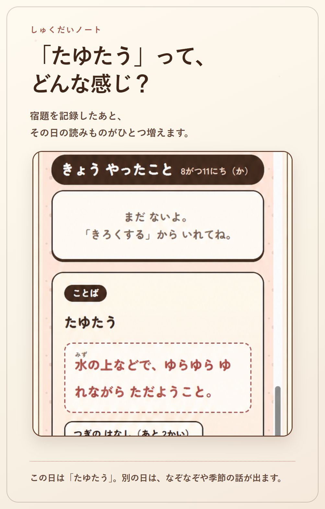

宿題の残りを、子どもが自分で確かめられる。
「しゅくだいノート」は、夏休みの宿題を記録するWebアプリです。次にやることと、どこまで終わったかを、子どもが読める画面に表示します。
アプリ取得なし登録不要

「あとどのくらい？」を、毎日見られるように。
保護者が管理表を見せるのではなく、子ども本人が読める画面にしました。入力も、ほとんどがタップだけです。
-
1
残りが見える
夏休みの日数と宿題の進み具合を、2本のバーで並べます。
-
2
次がわかる
「つぎは⑦」「つぎは絵をかく」のように、次にすることを1つだけ出します。
-
3
タップで残せる
やった番号や段階を選ぶだけ。文字を書かなくても記録できます。
-
4
保護者も見られる
必要なら家族の端末をつなぎ、進み具合と記録を共有できます。
「やった！」を押して記録
宿題を始める前にカードを見て、終わったら「やった！」を押します。専用の記録画面を探す必要はありません。
-
1 / 見る
次にするところを確かめる
ドリルの番号、観察カードの段階、毎日のノルマ。それぞれの宿題に合う形で、次にすることが表示されます。

カードには、今の進み具合と次にするところが並びます。 -
2 / 押す
終わったところを選ぶ
「やった！」を押し、最後に終わった番号を選びます。メモは書いても、書かなくてもかまいません。

番号を押すだけで記録できます。あとから戻して直すこともできます。 -
3 / 振り返る
やったことが日付ごとに残る
いつ、何を、どこまで進めたかが残ります。カレンダーから、その日の記録を見返すこともできます。

「やったこと」には、毎日の積み重ねがそのまま並びます。
いまのペースで間に合う？を伝えます
夏休みと宿題の進み具合を2本のバーで比べ、いまのペースだといつ終わるか、完了予測を表示します。
進み具合を見て、ひとこと送れます。
全体の残り、宿題ごとの進み具合、終わりそうな日、その日の記録をまとめて見られます。
子どもの画面には、80文字までの短いメッセージを送れます。承認やポイントの仕組みはありません。

宿題のあとに、短い読みものをひとつ。
毎日、ことばやなぞなぞ、季節の話などが出ます。宿題を記録した日は、その日の読みものがひとつ増えます。
この日は「たゆたう」。次に何が出るかは、開いてからのお楽しみです。
画面の色や雰囲気は、設定から選べます。写真は、ねこのデザインを選んで使ったときの例です。

- 1
子どもが使う端末で、しゅくだいノートを開く
- 2
1台で使うか、家族の端末をつなぐか選ぶ
- 3
学校から出た宿題に合わせて項目を直す
使う前に、知っておいてほしいこと。
費用やデータの保存先、家族で共有するときの扱いについて。
- 無料・広告なし課金はありません。広告も表示しません。
- 1台なら端末内だけ家族でつながなければ、名前・宿題・記録はその端末の中だけに保存されます。
- CookieなしでPV集計アプリの閲覧数と表示性能はCloudflare Web Analyticsで集計します。あわせて、どの機能が何回使われたかの回数だけを匿名で数えます。名前・宿題・記録を解析へ送りません。
- 共有は合言葉で家族でつなぐ場合、合言葉を知っている人が記録を見られます。招待リンクをSNSへ貼らないでください。
- 書き出して保管設定から記録をファイルへ書き出せます。端末を替える前や学期の切れ目に保存しておくと安心です。
よくある質問
細かい設定やデータの扱いは、画面写真つきの使い方のページをご覧ください。
何年生向けですか？
小学校の低学年を考えて作りました。表示は「すべてひらがな」から「小学6年生まで」、それに「漢字のまま」の中から選べます。
夏休み以外にも使えますか？
使えます。期間は設定で変えられるので、冬休みや、週ごとの宿題にも使えます。
子ども用の端末がなくても使えますか？
保護者の端末1台だけでも使えます。その場合は家族でつなぐ設定をせず、そのまま始めてください。
間違えて記録したら直せますか？
同じカードから入れ直せます。番号を戻すことも、記録を1件ずつ消すこともできます。
しばらく使わないと消えますか？
家族でつないだオンライン共有データは、90日間更新がないと削除対象になります。自動削除ではなく、管理者が対象を確認して削除します。予告メールはないため、大切な記録は設定から書き出してください。
ご意見・ご感想をいただけると嬉しいです
今後のアプリ開発や機能の充実・整備のため、お使いいただいた報告や感想、こういう機能があったらいい等、お気づきの点があればお知らせいただけると嬉しいです。不具合や誤り、使いづらい点などもお寄せください。